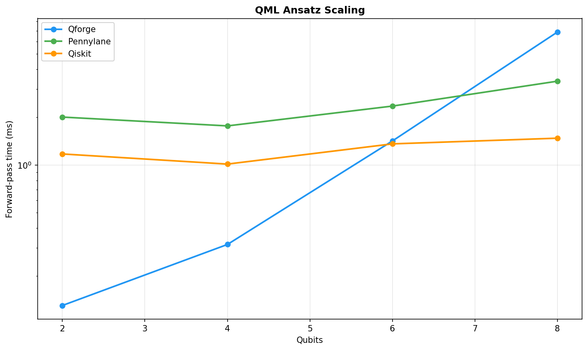
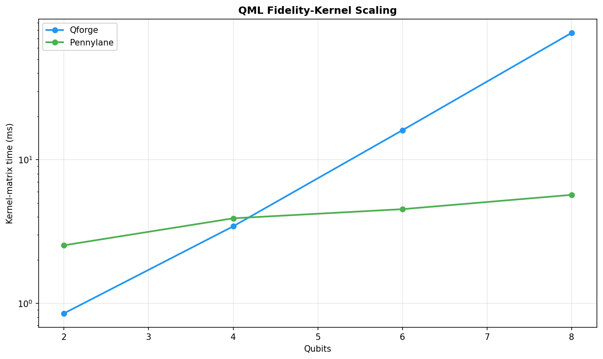
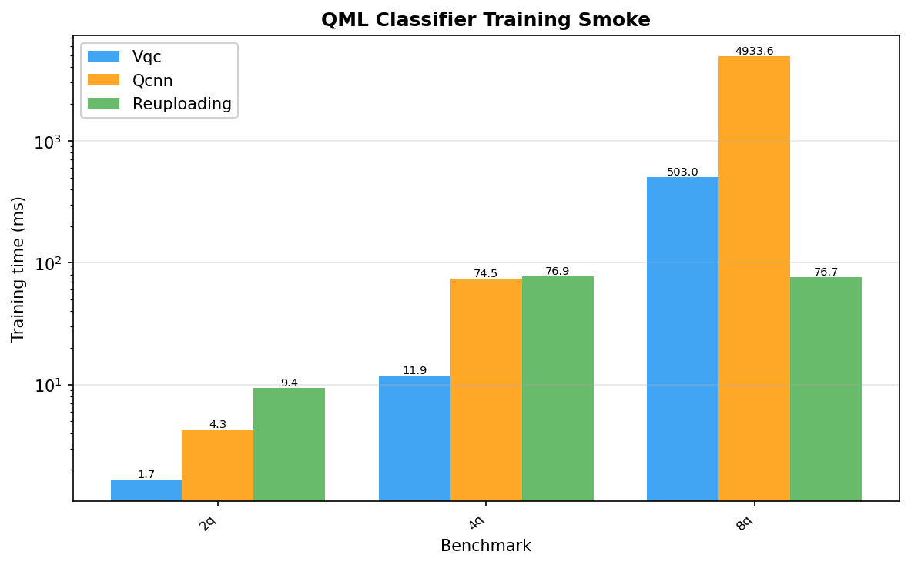

Generated: 2026-06-05T14:22:31



| Test | final_loss | kernel_trace | min_eig | model | n_layers | n_samples | observable | pennylane_ms | qforge_ms | qiskit_ms | qubits | steps |
|---|---|---|---|---|---|---|---|---|---|---|---|---|
| ansatz_2q | N/A | N/A | N/A | N/A | 2 | N/A | 0.91 | 2.003 | 0.1304 | 1.173 | 2 | N/A |
| ansatz_4q | N/A | N/A | N/A | N/A | 2 | N/A | 0.8296 | 1.763 | 0.3158 | 1.013 | 4 | N/A |
| ansatz_6q | N/A | N/A | N/A | N/A | 2 | N/A | 0.7567 | 2.349 | 1.416 | 1.358 | 6 | N/A |
| ansatz_8q | N/A | N/A | N/A | N/A | 2 | N/A | 0.6141 | 3.37 | 6.869 | 1.475 | 8 | N/A |
| kernel_2q | N/A | 4 | 0.08958 | N/A | N/A | 4 | N/A | 2.534 | 0.8507 | N/A | 2 | N/A |
| kernel_4q | N/A | 4 | 0.3753 | N/A | N/A | 4 | N/A | 3.906 | 3.436 | N/A | 4 | N/A |
| kernel_6q | N/A | 4 | 0.9289 | N/A | N/A | 4 | N/A | 4.523 | 16.04 | N/A | 6 | N/A |
| kernel_8q | N/A | 4 | 0.9774 | N/A | N/A | 4 | N/A | 5.69 | 76.43 | N/A | 8 | N/A |
| train_vqc_2q | 0.7233 | N/A | N/A | vqc | N/A | N/A | N/A | N/A | 1.666 | N/A | 2 | 1 |
| train_qcnn_2q | 0.8967 | N/A | N/A | qcnn | N/A | N/A | N/A | N/A | 4.274 | N/A | 2 | 1 |
| train_reuploading_2q | 0.7013 | N/A | N/A | reuploading | N/A | N/A | N/A | N/A | 9.407 | N/A | 2 | 1 |
| train_vqc_4q | 0.7393 | N/A | N/A | vqc | N/A | N/A | N/A | N/A | 11.92 | N/A | 4 | 1 |
| train_qcnn_4q | 1.014 | N/A | N/A | qcnn | N/A | N/A | N/A | N/A | 74.45 | N/A | 4 | 1 |
| train_reuploading_4q | 0.6929 | N/A | N/A | reuploading | N/A | N/A | N/A | N/A | 76.86 | N/A | 4 | 1 |
| train_vqc_8q | 0.665 | N/A | N/A | vqc | N/A | N/A | N/A | N/A | 503 | N/A | 8 | 1 |
| train_qcnn_8q | 0.9013 | N/A | N/A | qcnn | N/A | N/A | N/A | N/A | 4934 | N/A | 8 | 1 |
| train_reuploading_8q | 0.6967 | N/A | N/A | reuploading | N/A | N/A | N/A | N/A | 76.67 | N/A | 8 | 1 |